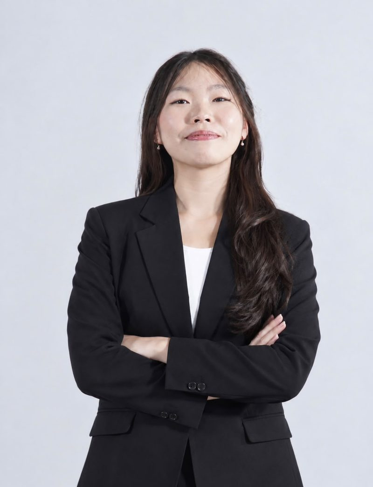

Mahasiswa Statistika ITS yang tertarik mengubah data jadi keputusan yang bermakna, lewat data analysis, machine learning, dan kerja tim di berbagai organisasi.

Mahasiswa semester 3 Statistika di Institut Teknologi Sepuluh Nopember (ITS), Surabaya. Aku tertarik memahami kebutuhan stakeholder, membangun relasi profesional, dan ikut proyek yang berdampak secara teknis maupun sosial. Adaptif, proaktif, dan berorientasi hasil. Aku merantau sejak SMA, jadi terbiasa cepat beradaptasi di lingkungan baru.
Menganalisis dataset stroke yang sangat tidak seimbang (4.87% kasus positif), membandingkan 7 model klasifikasi dengan SMOTE dan scale_pos_weight. XGBoost terbaik dengan ROC-AUC 0.8521, diinterpretasi pakai SHAP.
Sistem hybrid PCM-TEG dan ISORC untuk memanfaatkan panas buangan dari flare gas dan data center. Juara 2 Paper & Poster SPE.
Infografis solusi berbasis mikroalga untuk emisi CO2 industri dan limbah cair, dari analisis data emisi global sampai Indonesia. Juara 3 ISECO 2026.
Framework tata kelola lahan digital untuk ASEAN dengan transparansi berbasis blockchain, Geoportal, dan FPIC Tracker, lengkap dengan NPV, IRR, dan ROI. Finalis ASEAN Case Competition UGM.
Tim Trio Maut, dari riset data sampai desain visual “AlgaTech”.
Video bertema Impactful Business: inovasi untuk ekonomi inklusif dan berkelanjutan.
Mengusulkan ReEnerX, sistem hybrid PCM-TEG dan ISORC untuk waste heat recovery.
Mengembangkan “3S Strategy” untuk tata kelola lahan digital di konteks ASEAN.
GPA 3.51/4.00 (36 credits)
Overall grade 92.1, ranking 24
Pelatihan kepemimpinan, kerja tim, dan perencanaan event.
Presentasi 40 menit dalam bahasa Inggris untuk 33 delegasi internasional dari 15+ negara.
Menyusun konsep, timeline, dan sistem penilaian kompetisi BPC dan BCC.
Menyusun modul dan materi data science dasar.
Punya proyek, peluang magang, atau mau kolaborasi? Hubungi aku di Surabaya, Jawa Timur.